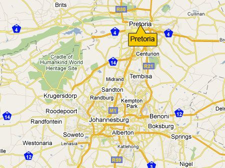

|
|
Pretoria Community Kitchen |
|
|
Pretoria Community Kitchen |

We welcome enquiries from community members, volunteers, donors and potential partners.

Community service area in central Pretoria.
Pretoria, Gauteng
Community service area in Sunnyside, Pretoria.
Sunnyside, Pretoria, Gauteng
Email: buhlebakhe@pretoriacommunitykitchen.org
Phone: 0790201475
TikTok: Pretoria Community Kitchen
Facebook: Pretoria Community Kitchen